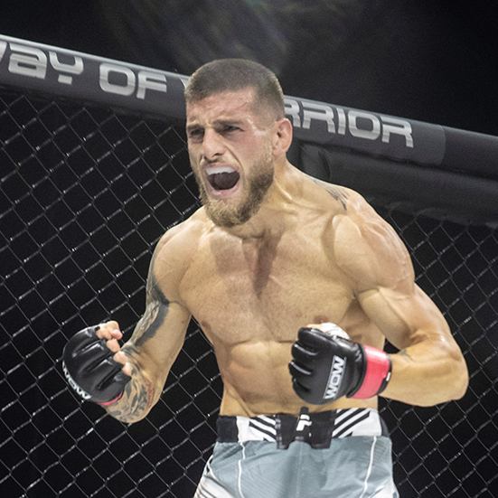
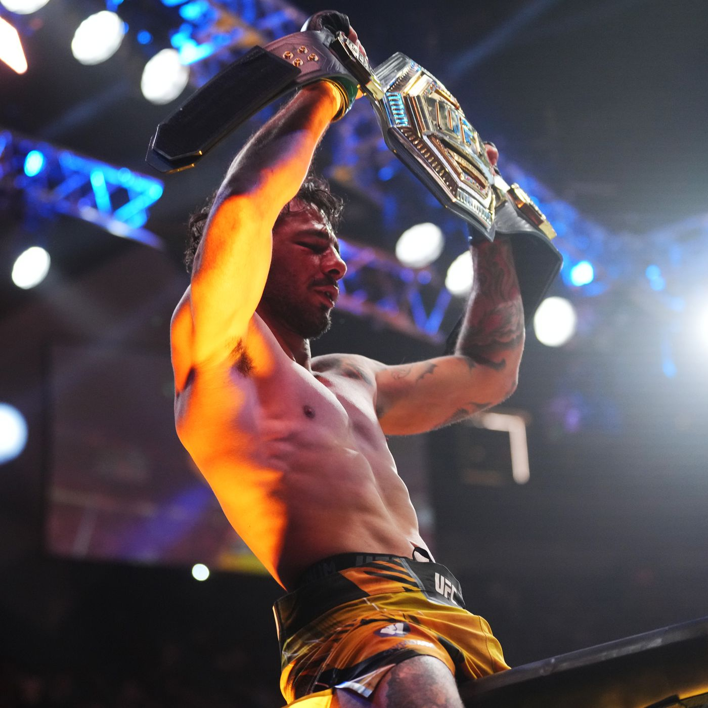
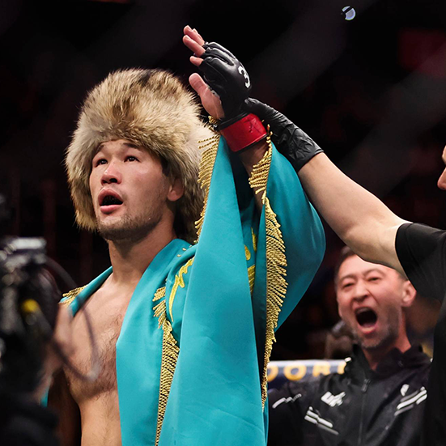
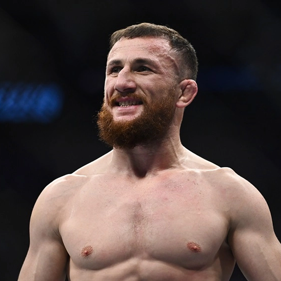
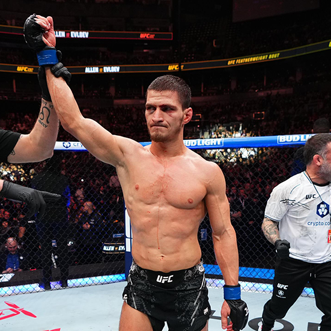

El hermano mayor de los Topuria desveló que se estrenará en la mayor liga de artes marciales mixtas "a principios de 2025".
Ya queda menos para ver el debut oficial de Aleksandre Topuria (5-1), hermano de Ilia, en la mayor liga de artes marciales mixtas del mundo. El hispanogeorgiano publicó un mensaje en su cuenta personal de Instagram explicando los motivos que han hecho retrasar este debut en UFC y desveló también una fecha aproximada.
El mayor de los Topuria ya confirmó meses atrás su entrada a la promotora presidida por Dana White, una UFC que tiene en Ilia una de las mayores estrellas dentro y fuera de la jaula y que confía en replicar estos mismos éxitos con Aleks, quien competirá en el peso gallo, una división superior al pluma.
"Bueno, como bien sabéis ya he firmado el contrato con la UFC gracias a dios y al trabajo duro, pero no tengo una fecha exacta. Hemos intentado entrar en el evento de París que se va a celebrar este fin de semana, también tuvimos intención de pelear en la misma cartelera mi hermano y yo, pero finalmente, por una cosa o por otra, puede sonar raro, pero no ha salido. Yo espero debutar antes de que termine este año. Diría yo que va a ser antes de que termine este año, y lo que sí puedo decir es que al 90% va a ser en Estados Unidos" dijo Aleksandre en septiembre. Tenía esperanzas de estrenarse a finales de 2024, pero parece que esta opción quedó en nada por un cambio de planes de la propia empresa.

El campeón Alexandre Pantoja defendió el cinturón ante Kai Asakura en una de las presentaciones más impresionantes en UFC. Repasa el triunfo del campeón.
Round 1
Pantoja salió agresivo con patada baja y golpes. Asakura respondió con una rodilla voladora pero cedió ante el derribo de Alexandre. Kai suelta rodillas pero recibe el castigo de Alexandre con golpes a la cabeza y a las piernas. El asiático movió las pies con velocidad para crear ángulos pero no pudo sorprender al campeón, quien a su vez aceleró los movimientos para no ceder la iniciativa.
Round 2
Alexandre atacó sin pausa y logró capturar la espalda. Presionó, ajustó el agarre y presionó hasta dormir al japonés.

El ascenso del kazajo Shavkat Rakhmonov (19-0) prosigue, imparable, hacia las cotas más altas. En Las Vegas, en UFC 310, con bastante público de Kazajistán en las gradas, superó a Ian Machado Garry (15-1) para romper su invicto y confirmarse como una de las grandes caras de la UFC.
El 'Nómada' ya sabe su camino: en 2025 peleará con Belal Muhammad (24-3) por el cinturón del peso welter para confirmar la fuerte presencia en las actuales artes marciales mixtas. Ambos, de hecho, se encontraron en el octógono de UFC 310 en un suave cara a cara. Ya tendría que haber peleado por el cinturón con él, pero Belal se lesionó... y el kazajo, en lugar de esperar, arriesgó todo con Ian Garry.
"Salí y peleé contra el hombre del saco, y demostré que es jodidamente humano. Salí allí con tres semanas de aviso, salvé este evento, salvé esta cartelera contra el hombre más aterrador de la división y salí allí y detuve casi todo", declaró el irlandés tras el combate. Y es cierto que llevó la pelea a decisión (rompiendo el pleno de finalizaciones de Rakhmonov) pudiendo, incluso, someterlo en dos ocasiones. Fue un combate brutal entre dos invictos y aspirantes al oro de la UFC. El nivel era altísimo.

Merab Dvalishvili protagonizará el combate coestlear de la velada del UFC 311 en el que se pondrá en juego el título de peso gallo que consiguió ante Sean O'Malley. El georgiano, amigo de Topuria, fue protagonista de un altercado durante el último evento numerado en 2024 de la compañía presidida por Dana White. Ese 'fan' resultó ser amigo de Umar Nurmagomedov, su próximo rival.
Merab Dvalishvili publicó un duro vídeo en redes sociales tras el fuerte encontronazo que tuvo con un fan durante el UFC 310. Mientras acompañaba a su amigo y compañero Aljamain Sterling, un fan se echó encima del campeón del peso gallo.
Más mentiras, faltas de respeto y provocaciones deliberadas desde el equipo de Umar. Aquí está la historia real
"Más mentiras, faltas de respeto y provocaciones deliberadas desde el equipo de Umar. Aquí está la historia real...", manifestó en redes sociales un Merab que también acompañaba la publicación con un vídeo en el que se explicaba toda la historia con este fan, quién aparece en varias fotos tanto con Umar Nurmagomedov, su próximo rival y aspirante al trono del peso gallo, y el resto de peleadores daguestaníes que se encuentran en la UFC.

El púgil ruso obtuvo su noveno triunfo consecutivo dentro de la UFC ante Aljamain Sterling y reclamó una oportunidad por el título del peso pluma
La división del peso pluma de la UFC es una fábrica de talento que suele forjar algunos de los mejores peleadores del planeta. Dominada ahora por nuestro Ilia Topuria, la categoría de las 145 libras tiene en sus manos un invicto que aspira, algún día, a desafiar el trono de 'El Matador': Movsar Evloev (19-0).
El ruso fue uno de los grandes ganadores del pasado UFC 310 tras imponerse a Aljamain Sterling, excampeón del peso gallo, en el combate más anticipado de la cartelera preliminar. Evloev se llevó el triunfo por decisión unánime en un enfrentamiento de mucho nivel en el suelo y en el que pudimos ver en acción a dos de los mejores grapplers del momento.
El prospecto de 30 años tuvo que sufrir ante el estadounidense, quien empezó mejor, lo tiró al suelo y estuvo pegado a su espalda. Evloev, con un wrestling de élite, pudo zafarse de la guardia de su rival y acabó mejor que Sterling, al menos lo suficiente para que los jueces lo vieran vencedor. La moneda pudo salir de cualquiera de los dos lados. Ya son 9 triunfos consecutivos para Evloev dentro de UFC desde su debut en 2019, todas por decisión. No ha finalizado a ninguno de sus oponentes, una falta de 'punch' que penaliza al ruso de cara a sus aspiraciones titulares. De hecho, que este combate estuviese en preliminares y no en la cartelera titular pudo deberse a esto, ya que Aljamain es otro de los 'odiados' por la compañía.